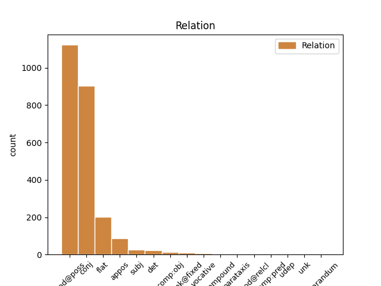
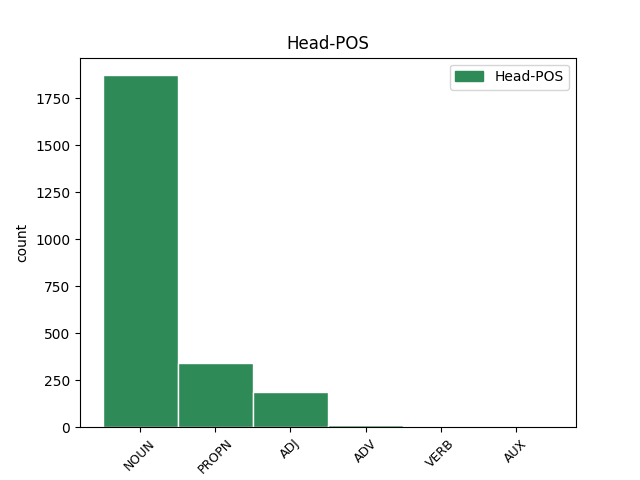
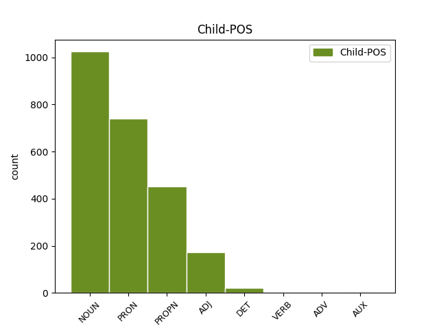

Distribution of features within this leaf



Agreement Rules sorted by frequency.
- When the dependent token is the conjunct(conj) of the head token, and the head token is NOUN
1 Baren _ _ _ _ 0 _ _ _
2 var _ _ _ _ 0 _ _ _
3 ett _ _ _ _ 0 _ _ _
4 schackbräde _ _ _ _ 0 _ _ _
5 av _ _ _ _ 0 _ _ _
6 par par NOUN PL-IND-NOM Case=Nom|Definite=Ind|Gender=Com|Number=Plur 0 _ _ _
7 som _ _ _ _ 0 _ _ _
8 manövrerade _ _ _ _ 0 _ _ _
9 sina _ _ _ _ 0 _ _ _
10 martinis _ _ _ _ 0 _ _ _
11 och _ _ _ _ 0 _ _ _
12 kypare kypare NOUN IND-NOM Case=Nom|Definite=Ind|Gender=Com|Number=Plur 6 conj _ _
13 som _ _ _ _ 0 _ _ _
14 bar _ _ _ _ 0 _ _ _
15 krombrickor _ _ _ _ 0 _ _ _
16 högt _ _ _ _ 0 _ _ _
17 uppe _ _ _ _ 0 _ _ _
18 i _ _ _ _ 0 _ _ _
19 luften _ _ _ _ 0 _ _ _
20 . _ _ _ _ 0 _ _ _
1 I _ _ _ _ 0 _ _ _
2 stället _ _ _ _ 0 _ _ _
3 begav _ _ _ _ 0 _ _ _
4 han _ _ _ _ 0 _ _ _
5 sig _ _ _ _ 0 _ _ _
6 till _ _ _ _ 0 _ _ _
7 New New PROPN SG-NOM Case=Nom 0 _ _ _
8 York york PROPN SG-NOM Case=Nom 7 flat _ SpaceAfter=No
9 . _ _ _ _ 0 _ _ _
1 När _ _ _ _ 0 _ _ _
2 dagarna _ _ _ _ 0 _ _ _
3 var _ _ _ _ 0 _ _ _
4 gyllene gyllene ADJ POS-IND Case=Nom|Definite=Ind|Degree=Pos|Number=Plur 0 _ _ _
5 och _ _ _ _ 0 _ _ _
6 gröna grön ADJ POS-PL-IND Case=Nom|Definite=Ind|Degree=Pos|Number=Plur 4 conj _ _
7 såg _ _ _ _ 0 _ _ _
8 hela _ _ _ _ 0 _ _ _
9 huset _ _ _ _ 0 _ _ _
10 ut _ _ _ _ 0 _ _ _
11 som _ _ _ _ 0 _ _ _
12 om _ _ _ _ 0 _ _ _
13 det _ _ _ _ 0 _ _ _
14 svävade _ _ _ _ 0 _ _ _
15 . _ _ _ _ 0 _ _ _
1 Tre _ _ _ _ 0 _ _ _
2 par _ _ _ _ 0 _ _ _
3 : _ _ _ _ 0 _ _ _
4 Jove _ _ _ _ 0 _ _ _
5 och _ _ _ _ 0 _ _ _
6 Stella _ _ _ _ 0 _ _ _
7 , _ _ _ _ 0 _ _ _
8 Jove _ _ _ _ 0 _ _ _
9 och _ _ _ _ 0 _ _ _
10 Alice _ _ _ _ 0 _ _ _
11 , _ _ _ _ 0 _ _ _
12 Alice Alice PROPN SG-NOM Case=Nom|Gender=Com|Number=Sing 0 _ _ _
13 och _ _ _ _ 0 _ _ _
14 Stella Stella PROPN SG-NOM Case=Nom|Gender=Com|Number=Sing 12 conj _ SpaceAfter=No
15 , _ _ _ _ 0 _ _ _
16 och _ _ _ _ 0 _ _ _
17 under _ _ _ _ 0 _ _ _
18 vars _ _ _ _ 0 _ _ _
19 och _ _ _ _ 0 _ _ _
20 ens _ _ _ _ 0 _ _ _
21 yta _ _ _ _ 0 _ _ _
22 finns _ _ _ _ 0 _ _ _
23 den _ _ _ _ 0 _ _ _
24 andres _ _ _ _ 0 _ _ _
25 ansikte _ _ _ _ 0 _ _ _
26 . _ _ _ _ 0 _ _ _
1 Ett _ _ _ _ 0 _ _ _
2 orakel _ _ _ _ 0 _ _ _
3 berättade _ _ _ _ 0 _ _ _
4 för _ _ _ _ 0 _ _ _
5 Zeus _ _ _ _ 0 _ _ _
6 att _ _ _ _ 0 _ _ _
7 barnet _ _ _ _ 0 _ _ _
8 skulle _ _ _ _ 0 _ _ _
9 bli _ _ _ _ 0 _ _ _
10 en _ _ _ _ 0 _ _ _
11 flicka _ _ _ _ 0 _ _ _
12 men _ _ _ _ 0 _ _ _
13 om _ _ _ _ 0 _ _ _
14 Metis _ _ _ _ 0 _ _ _
15 återigen _ _ _ _ 0 _ _ _
16 skulle _ _ _ _ 0 _ _ _
17 bli _ _ _ _ 0 _ _ _
18 havande _ _ _ _ 0 _ _ _
19 skulle _ _ _ _ 0 _ _ _
20 hon _ _ _ _ 0 _ _ _
21 föda _ _ _ _ 0 _ _ _
22 en _ _ _ _ 0 _ _ _
23 pojke _ _ _ _ 0 _ _ _
24 som _ _ _ _ 0 _ _ _
25 skulle _ _ _ _ 0 _ _ _
26 störta _ _ _ _ 0 _ _ _
27 Zeus _ _ _ _ 0 _ _ _
28 , _ _ _ _ 0 _ _ _
29 på _ _ _ _ 0 _ _ _
30 samma _ _ _ _ 0 _ _ _
31 sätt _ _ _ _ 0 _ _ _
32 som _ _ _ _ 0 _ _ _
33 Zeus _ _ _ _ 0 _ _ _
34 hade _ _ _ _ 0 _ _ _
35 avsatt _ _ _ _ 0 _ _ _
36 sin _ _ _ _ 0 _ _ _
37 egen _ _ _ _ 0 _ _ _
38 far far NOUN SG-IND-NOM Case=Nom|Definite=Ind|Gender=Com|Number=Sing 0 _ _ _
39 , _ _ _ _ 0 _ _ _
40 Kronos Kronos PROPN SG-NOM Case=Nom 38 appos _ SpaceAfter=No
41 . _ _ _ _ 0 _ _ _
1 Min jag PRON P1SG-GEN-SG Case=Gen|Definite=Def|Gender=Com|Number=Sing|Poss=Yes|PronType=Prs 2 mod@poss _ _
2 fars far NOUN SG-IND-GEN Case=Gen|Definite=Ind|Gender=Com|Number=Sing 0 _ _ _
3 företag _ _ _ _ 0 _ _ _
4 , _ _ _ _ 0 _ _ _
5 där _ _ _ _ 0 _ _ _
6 han _ _ _ _ 0 _ _ _
7 hade _ _ _ _ 0 _ _ _
8 arbetat _ _ _ _ 0 _ _ _
9 sedan _ _ _ _ 0 _ _ _
10 sin _ _ _ _ 0 _ _ _
11 ungdom _ _ _ _ 0 _ _ _
12 , _ _ _ _ 0 _ _ _
13 led _ _ _ _ 0 _ _ _
14 ohållbara _ _ _ _ 0 _ _ _
15 förluster _ _ _ _ 0 _ _ _
16 . _ _ _ _ 0 _ _ _
1 Medan _ _ _ _ 0 _ _ _
2 jag _ _ _ _ 0 _ _ _
3 försökte _ _ _ _ 0 _ _ _
4 smälta _ _ _ _ 0 _ _ _
5 denna _ _ _ _ 0 _ _ _
6 osannolika _ _ _ _ 0 _ _ _
7 uppenbarelse _ _ _ _ 0 _ _ _
8 , _ _ _ _ 0 _ _ _
9 ägnade _ _ _ _ 0 _ _ _
10 sig _ _ _ _ 0 _ _ _
11 farmor _ _ _ _ 0 _ _ _
12 åt _ _ _ _ 0 _ _ _
13 att _ _ _ _ 0 _ _ _
14 dansa _ _ _ _ 0 _ _ _
15 twist _ _ _ _ 0 _ _ _
16 , _ _ _ _ 0 _ _ _
17 eller _ _ _ _ 0 _ _ _
18 något _ _ _ _ 0 _ _ _
19 som _ _ _ _ 0 _ _ _
20 snarare _ _ _ _ 0 _ _ _
21 kunde _ _ _ _ 0 _ _ _
22 beskrivas _ _ _ _ 0 _ _ _
23 som _ _ _ _ 0 _ _ _
24 bålrullningar _ _ _ _ 0 _ _ _
25 , _ _ _ _ 0 _ _ _
26 eftersom _ _ _ _ 0 _ _ _
27 de den DET PERS-P3PL-NOM Case=Nom|Definite=Def|Number=Plur|PronType=Art 30 det _ _
28 två _ _ _ _ 0 _ _ _
29 rörliga _ _ _ _ 0 _ _ _
30 delarna del NOUN PL-DEF-NOM Case=Nom|Definite=Def|Gender=Com|Number=Plur 0 _ _ _
31 utgjordes _ _ _ _ 0 _ _ _
32 av _ _ _ _ 0 _ _ _
33 bålen _ _ _ _ 0 _ _ _
34 och _ _ _ _ 0 _ _ _
35 huvudet _ _ _ _ 0 _ _ _
36 . _ _ _ _ 0 _ _ _
1 På _ _ _ _ 0 _ _ _
2 bröllopsnatten _ _ _ _ 0 _ _ _
3 på _ _ _ _ 0 _ _ _
4 Hotel _ _ _ _ 0 _ _ _
5 Ra-Ra _ _ _ _ 0 _ _ _
6 ( _ _ _ _ 0 _ _ _
7 dekor dekor NOUN SG-IND-NOM Case=Nom|Definite=Ind|Gender=Com|Number=Sing 10 subj _ SpaceAfter=No
8 : _ _ _ _ 0 _ _ _
9 liverpoolskt _ _ _ _ 0 _ _ _
10 egyptiskt egyptisk ADJ POS-SG-IND Case=Nom|Definite=Ind|Degree=Pos|Gender=Neut|Number=Sing 0 _ _ _
11 ) _ _ _ _ 0 _ _ _
12 , _ _ _ _ 0 _ _ _
13 tog _ _ _ _ 0 _ _ _
14 min _ _ _ _ 0 _ _ _
15 far _ _ _ _ 0 _ _ _
16 av _ _ _ _ 0 _ _ _
17 sig _ _ _ _ 0 _ _ _
18 pyjamasen _ _ _ _ 0 _ _ _
19 så _ _ _ _ 0 _ _ _
20 att _ _ _ _ 0 _ _ _
21 hans _ _ _ _ 0 _ _ _
22 hustru _ _ _ _ 0 _ _ _
23 kunde _ _ _ _ 0 _ _ _
24 beskåda _ _ _ _ 0 _ _ _
25 honom _ _ _ _ 0 _ _ _
26 som _ _ _ _ 0 _ _ _
27 den _ _ _ _ 0 _ _ _
28 man _ _ _ _ 0 _ _ _
29 han _ _ _ _ 0 _ _ _
30 var _ _ _ _ 0 _ _ _
31 , _ _ _ _ 0 _ _ _
32 varefter _ _ _ _ 0 _ _ _
33 han _ _ _ _ 0 _ _ _
34 förkunnade _ _ _ _ 0 _ _ _
35 att _ _ _ _ 0 _ _ _
36 han _ _ _ _ 0 _ _ _
37 inte _ _ _ _ 0 _ _ _
38 tänkte _ _ _ _ 0 _ _ _
39 älska _ _ _ _ 0 _ _ _
40 med _ _ _ _ 0 _ _ _
41 henne _ _ _ _ 0 _ _ _
42 förrän _ _ _ _ 0 _ _ _
43 han _ _ _ _ 0 _ _ _
44 hade _ _ _ _ 0 _ _ _
45 blivit _ _ _ _ 0 _ _ _
46 utsedd _ _ _ _ 0 _ _ _
47 till _ _ _ _ 0 _ _ _
48 chef _ _ _ _ 0 _ _ _
49 för _ _ _ _ 0 _ _ _
50 rederiet _ _ _ _ 0 _ _ _
51 . _ _ _ _ 0 _ _ _
1 Min _ _ _ _ 0 _ _ _
2 farmor _ _ _ _ 0 _ _ _
3 , _ _ _ _ 0 _ _ _
4 som _ _ _ _ 0 _ _ _
5 var _ _ _ _ 0 _ _ _
6 fast _ _ _ _ 0 _ _ _
7 övertygad övertygad ADJ POS-SG-IND Case=Nom|Definite=Ind|Degree=Pos|Gender=Com|Number=Sing 0 _ _ _
8 anhängare anhängare NOUN IND-NOM Case=Nom|Definite=Ind|Gender=Com|Number=Plur 7 comp:obj _ _
9 av _ _ _ _ 0 _ _ _
10 Guds _ _ _ _ 0 _ _ _
11 ord _ _ _ _ 0 _ _ _
12 , _ _ _ _ 0 _ _ _
13 fann _ _ _ _ 0 _ _ _
14 större _ _ _ _ 0 _ _ _
15 nöje _ _ _ _ 0 _ _ _
16 i _ _ _ _ 0 _ _ _
17 denna _ _ _ _ 0 _ _ _
18 stund _ _ _ _ 0 _ _ _
19 än _ _ _ _ 0 _ _ _
20 någon _ _ _ _ 0 _ _ _
21 annan _ _ _ _ 0 _ _ _
22 under _ _ _ _ 0 _ _ _
23 hela _ _ _ _ 0 _ _ _
24 veckan _ _ _ _ 0 _ _ _
25 , _ _ _ _ 0 _ _ _
26 inklusive _ _ _ _ 0 _ _ _
27 torsdag _ _ _ _ 0 _ _ _
28 eftermiddag _ _ _ _ 0 _ _ _
29 klockan _ _ _ _ 0 _ _ _
30 två _ _ _ _ 0 _ _ _
31 då _ _ _ _ 0 _ _ _
32 hon _ _ _ _ 0 _ _ _
33 kvitterade _ _ _ _ 0 _ _ _
34 ut _ _ _ _ 0 _ _ _
35 sin _ _ _ _ 0 _ _ _
36 pension _ _ _ _ 0 _ _ _
37 . _ _ _ _ 0 _ _ _
1 Algonquin Algonquin PROPN SG-NOM Case=Nom 0 _ _ _
2 Hotel _ _ _ _ 0 _ _ _
3 : _ _ _ _ 0 _ _ _
4 Dorothy Dorothy PROPN SG-NOM Case=Nom 1 appos _ _
5 Parker _ _ _ _ 0 _ _ _
6 , _ _ _ _ 0 _ _ _
7 James _ _ _ _ 0 _ _ _
8 Thurber _ _ _ _ 0 _ _ _
9 , _ _ _ _ 0 _ _ _
10 The _ _ _ _ 0 _ _ _
11 New _ _ _ _ 0 _ _ _
12 Yorker _ _ _ _ 0 _ _ _
13 , _ _ _ _ 0 _ _ _
14 min _ _ _ _ 0 _ _ _
15 far _ _ _ _ 0 _ _ _
16 år _ _ _ _ 0 _ _ _
17 1957 _ _ _ _ 0 _ _ _
18 . _ _ _ _ 0 _ _ _
1 Bray _ _ _ _ 0 _ _ _
2 visste _ _ _ _ 0 _ _ _
3 -- _ _ _ _ 0 _ _ _
4 nu _ _ _ _ 0 _ _ _
5 när _ _ _ _ 0 _ _ _
6 han _ _ _ _ 0 _ _ _
7 var _ _ _ _ 0 _ _ _
8 tillbaka _ _ _ _ 0 _ _ _
9 på _ _ _ _ 0 _ _ _
10 nytt _ _ _ _ 0 _ _ _
11 i _ _ _ _ 0 _ _ _
12 detta _ _ _ _ 0 _ _ _
13 land _ _ _ _ 0 _ _ _
14 , _ _ _ _ 0 _ _ _
15 på på ADV _ Case=Nom 0 _ _ _
16 nytt ny ADJ _ Case=Nom|Definite=Ind|Degree=Pos|Gender=Neut|Number=Sing 15 unk@fixed _ _
17 medveten _ _ _ _ 0 _ _ _
18 om _ _ _ _ 0 _ _ _
19 sin _ _ _ _ 0 _ _ _
20 längd _ _ _ _ 0 _ _ _
21 och _ _ _ _ 0 _ _ _
22 ljusa _ _ _ _ 0 _ _ _
23 hy _ _ _ _ 0 _ _ _
24 , _ _ _ _ 0 _ _ _
25 nästan _ _ _ _ 0 _ _ _
26 som _ _ _ _ 0 _ _ _
27 om _ _ _ _ 0 _ _ _
28 de _ _ _ _ 0 _ _ _
29 varit _ _ _ _ 0 _ _ _
30 en _ _ _ _ 0 _ _ _
31 form _ _ _ _ 0 _ _ _
32 av _ _ _ _ 0 _ _ _
33 aggression _ _ _ _ 0 _ _ _
34 som _ _ _ _ 0 _ _ _
35 han _ _ _ _ 0 _ _ _
36 själv _ _ _ _ 0 _ _ _
37 inte _ _ _ _ 0 _ _ _
38 rådde _ _ _ _ 0 _ _ _
39 för _ _ _ _ 0 _ _ _
40 -- _ _ _ _ 0 _ _ _
41 att _ _ _ _ 0 _ _ _
42 mannen _ _ _ _ 0 _ _ _
43 drog _ _ _ _ 0 _ _ _
44 sig _ _ _ _ 0 _ _ _
45 undan _ _ _ _ 0 _ _ _
46 kontakt _ _ _ _ 0 _ _ _
47 med _ _ _ _ 0 _ _ _
48 honom _ _ _ _ 0 _ _ _
49 . _ _ _ _ 0 _ _ _
1 " _ _ _ _ 0 _ _ _
2 Nej _ _ _ _ 0 _ _ _
3 . _ _ _ _ 0 _ _ _
4 Jag jag PRON PERS-P1SG-NOM Case=Nom|Definite=Def|Gender=Com|Number=Sing|PronType=Prs 5 subj _ _
5 bor bo NOUN PL-IND-NOM Case=Nom|Definite=Ind|Gender=Com|Number=Plur 0 _ _ _
6 i _ _ _ _ 0 _ _ _
7 New _ _ _ _ 0 _ _ _
8 York _ _ _ _ 0 _ _ _
9 . _ _ _ _ 0 _ _ _
1 Tack tack NOUN SG-IND-NOM Case=Nom|Definite=Ind|Gender=Neut|Number=Sing 0 _ _ _
2 så _ _ _ _ 0 _ _ _
3 mycket _ _ _ _ 0 _ _ _
4 , _ _ _ _ 0 _ _ _
5 herr _ _ _ _ 0 _ _ _
6 kommissionär _ _ _ _ 0 _ _ _
7 Kinnock Kinnock PROPN SG-NOM Case=Nom 1 vocative _ SpaceAfter=No
8 . _ _ _ _ 0 _ _ _
1 Möblerna _ _ _ _ 0 _ _ _
2 var _ _ _ _ 0 _ _ _
3 enkla enkel ADJ POS-PL-IND Case=Nom|Definite=Ind|Degree=Pos|Number=Plur 0 _ _ _
4 : _ _ _ _ 0 _ _ _
5 ett _ _ _ _ 0 _ _ _
6 avlutat _ _ _ _ 0 _ _ _
7 bord bord NOUN IND-NOM Case=Nom|Definite=Ind|Gender=Neut|Number=Sing 3 appos _ _
8 i _ _ _ _ 0 _ _ _
9 sykomorträ _ _ _ _ 0 _ _ _
10 , _ _ _ _ 0 _ _ _
11 en _ _ _ _ 0 _ _ _
12 djup _ _ _ _ 0 _ _ _
13 diskho _ _ _ _ 0 _ _ _
14 i _ _ _ _ 0 _ _ _
15 emalj _ _ _ _ 0 _ _ _
16 , _ _ _ _ 0 _ _ _
17 några _ _ _ _ 0 _ _ _
18 udda _ _ _ _ 0 _ _ _
19 stolar _ _ _ _ 0 _ _ _
20 och _ _ _ _ 0 _ _ _
21 en _ _ _ _ 0 _ _ _
22 stinkande _ _ _ _ 0 _ _ _
23 Rayburnspis _ _ _ _ 0 _ _ _
24 som _ _ _ _ 0 _ _ _
25 var _ _ _ _ 0 _ _ _
26 koleldad _ _ _ _ 0 _ _ _
27 och _ _ _ _ 0 _ _ _
28 lämnade _ _ _ _ 0 _ _ _
29 sot _ _ _ _ 0 _ _ _
30 på _ _ _ _ 0 _ _ _
31 farmors _ _ _ _ 0 _ _ _
32 scones _ _ _ _ 0 _ _ _
33 . _ _ _ _ 0 _ _ _
1 Huset _ _ _ _ 0 _ _ _
2 som _ _ _ _ 0 _ _ _
3 de _ _ _ _ 0 _ _ _
4 hade _ _ _ _ 0 _ _ _
5 köpt _ _ _ _ 0 _ _ _
6 och _ _ _ _ 0 _ _ _
7 fyllt _ _ _ _ 0 _ _ _
8 med _ _ _ _ 0 _ _ _
9 tillhörigheter tillhörighet NOUN PL-IND-NOM Case=Nom|Definite=Ind|Gender=Com|Number=Plur 0 _ _ _
10 som _ _ _ _ 0 _ _ _
11 de _ _ _ _ 0 _ _ _
12 haft ha AUX SUP-AUX Case=Nom 9 mod@relcl _ _
13 magasinerade _ _ _ _ 0 _ _ _
14 under _ _ _ _ 0 _ _ _
15 alla _ _ _ _ 0 _ _ _
16 de _ _ _ _ 0 _ _ _
17 år _ _ _ _ 0 _ _ _
18 de _ _ _ _ 0 _ _ _
19 vistades _ _ _ _ 0 _ _ _
20 i _ _ _ _ 0 _ _ _
21 Afrika _ _ _ _ 0 _ _ _
22 , _ _ _ _ 0 _ _ _
23 trädgården _ _ _ _ 0 _ _ _
24 som _ _ _ _ 0 _ _ _
25 de _ _ _ _ 0 _ _ _
26 hade _ _ _ _ 0 _ _ _
27 anlagt _ _ _ _ 0 _ _ _
28 , _ _ _ _ 0 _ _ _
29 talade _ _ _ _ 0 _ _ _
30 sitt _ _ _ _ 0 _ _ _
31 tysta _ _ _ _ 0 _ _ _
32 språk _ _ _ _ 0 _ _ _
33 till _ _ _ _ 0 _ _ _
34 dem _ _ _ _ 0 _ _ _
35 . _ _ _ _ 0 _ _ _
1 Harry _ _ _ _ 0 _ _ _
2 var _ _ _ _ 0 _ _ _
3 inte _ _ _ _ 0 _ _ _
4 det _ _ _ _ 0 _ _ _
5 minsta _ _ _ _ 0 _ _ _
6 lik lik ADJ POS-SG-IND Case=Nom|Definite=Ind|Degree=Pos|Gender=Com|Number=Sing 0 _ _ _
7 någon _ _ _ _ 0 _ _ _
8 annan annan ADJ POS-SG-IND Case=Nom|Definite=Ind|Degree=Pos|Gender=Com|Number=Sing 6 comp:pred _ _
9 i _ _ _ _ 0 _ _ _
10 familjen _ _ _ _ 0 _ _ _
11 . _ _ _ _ 0 _ _ _
1 " _ _ _ _ 0 _ _ _
2 Mitt _ _ _ _ 0 _ _ _
3 fel fel NOUN IND-NOM Case=Nom|Definite=Ind|Gender=Neut|Number=Sing 0 _ _ _
4 " _ _ _ _ 0 _ _ _
5 , _ _ _ _ 0 _ _ _
6 sa _ _ _ _ 0 _ _ _
7 hon _ _ _ _ 0 _ _ _
8 för _ _ _ _ 0 _ _ _
9 sig _ _ _ _ 0 _ _ _
10 själv _ _ _ _ 0 _ _ _
11 . _ _ _ _ 0 _ _ _
12 " _ _ _ _ 0 _ _ _
13 Mitt _ _ _ _ 0 _ _ _
14 fel fel NOUN IND-NOM Case=Nom|Definite=Ind|Gender=Neut|Number=Sing 3 parataxis _ SpaceAfter=No
15 . _ _ _ _ 0 _ _ _
16 " _ _ _ _ 0 _ _ _
1 Han _ _ _ _ 0 _ _ _
2 hade _ _ _ _ 0 _ _ _
3 bott _ _ _ _ 0 _ _ _
4 där _ _ _ _ 0 _ _ _
5 eftersom _ _ _ _ 0 _ _ _
6 det _ _ _ _ 0 _ _ _
7 verkade _ _ _ _ 0 _ _ _
8 så _ _ _ _ 0 _ _ _
9 engelskt _ _ _ _ 0 _ _ _
10 , _ _ _ _ 0 _ _ _
11 och _ _ _ _ 0 _ _ _
12 när _ _ _ _ 0 _ _ _
13 han _ _ _ _ 0 _ _ _
14 tog _ _ _ _ 0 _ _ _
15 med _ _ _ _ 0 _ _ _
16 mig _ _ _ _ 0 _ _ _
17 till _ _ _ _ 0 _ _ _
18 New _ _ _ _ 0 _ _ _
19 York _ _ _ _ 0 _ _ _
20 första _ _ _ _ 0 _ _ _
21 gången _ _ _ _ 0 _ _ _
22 när _ _ _ _ 0 _ _ _
23 jag _ _ _ _ 0 _ _ _
24 var _ _ _ _ 0 _ _ _
25 barn _ _ _ _ 0 _ _ _
26 var _ _ _ _ 0 _ _ _
27 det _ _ _ _ 0 _ _ _
28 Algonquin Algonquin PROPN SG-NOM Case=Nom 29 compound _ _
29 Hotel Hotel PROPN SG-NOM Case=Nom 0 _ _ _
30 vi _ _ _ _ 0 _ _ _
31 tog _ _ _ _ 0 _ _ _
32 in _ _ _ _ 0 _ _ _
33 på _ _ _ _ 0 _ _ _
34 . _ _ _ _ 0 _ _ _
1 När _ _ _ _ 0 _ _ _
2 du _ _ _ _ 0 _ _ _
3 utformar _ _ _ _ 0 _ _ _
4 en _ _ _ _ 0 _ _ _
5 webbsida _ _ _ _ 0 _ _ _
6 med _ _ _ _ 0 _ _ _
7 Microsoft _ _ _ _ 0 _ _ _
8 Office _ _ _ _ 0 _ _ _
9 Web _ _ _ _ 0 _ _ _
10 Components _ _ _ _ 0 _ _ _
11 kan _ _ _ _ 0 _ _ _
12 alla _ _ _ _ 0 _ _ _
13 användare _ _ _ _ 0 _ _ _
14 med _ _ _ _ 0 _ _ _
15 en _ _ _ _ 0 _ _ _
16 Microsoft Microsoft PROPN SG-NOM Case=Nom 18 compound _ _
17 Office _ _ _ _ 0 _ _ _
18 XP-licens XP-licens NOUN SG-IND-NOM Case=Nom|Definite=Ind|Gender=Com|Number=Sing 0 _ _ _
19 samverka _ _ _ _ 0 _ _ _
20 med _ _ _ _ 0 _ _ _
21 komponenterna _ _ _ _ 0 _ _ _
22 i _ _ _ _ 0 _ _ _
23 webbläsaren _ _ _ _ 0 _ _ _
24 med _ _ _ _ 0 _ _ _
25 den _ _ _ _ 0 _ _ _
26 interaktivitetsnivå _ _ _ _ 0 _ _ _
27 som _ _ _ _ 0 _ _ _
28 du _ _ _ _ 0 _ _ _
29 väljer _ _ _ _ 0 _ _ _
30 . _ _ _ _ 0 _ _ _
1 Beroende beroende VERB NDE Case=Nom 0 _ _ _
2 och _ _ _ _ 0 _ _ _
3 ingrott _ _ _ _ 0 _ _ _
4 agg agg NOUN SG-IND-NOM Case=Nom|Definite=Ind|Gender=Neut|Number=Sing 1 conj _ _
5 hand _ _ _ _ 0 _ _ _
6 i _ _ _ _ 0 _ _ _
7 hand _ _ _ _ 0 _ _ _
8 . _ _ _ _ 0 _ _ _
1 Huset _ _ _ _ 0 _ _ _
2 som _ _ _ _ 0 _ _ _
3 de _ _ _ _ 0 _ _ _
4 hade _ _ _ _ 0 _ _ _
5 köpt _ _ _ _ 0 _ _ _
6 och _ _ _ _ 0 _ _ _
7 fyllt _ _ _ _ 0 _ _ _
8 med _ _ _ _ 0 _ _ _
9 tillhörigheter _ _ _ _ 0 _ _ _
10 som _ _ _ _ 0 _ _ _
11 de de PRON PERS-P3PL-NOM Case=Nom|Definite=Def|Number=Plur|PronType=Prs 12 subj _ _
12 haft ha AUX SUP-AUX Case=Nom 0 _ _ _
13 magasinerade _ _ _ _ 0 _ _ _
14 under _ _ _ _ 0 _ _ _
15 alla _ _ _ _ 0 _ _ _
16 de _ _ _ _ 0 _ _ _
17 år _ _ _ _ 0 _ _ _
18 de _ _ _ _ 0 _ _ _
19 vistades _ _ _ _ 0 _ _ _
20 i _ _ _ _ 0 _ _ _
21 Afrika _ _ _ _ 0 _ _ _
22 , _ _ _ _ 0 _ _ _
23 trädgården _ _ _ _ 0 _ _ _
24 som _ _ _ _ 0 _ _ _
25 de _ _ _ _ 0 _ _ _
26 hade _ _ _ _ 0 _ _ _
27 anlagt _ _ _ _ 0 _ _ _
28 , _ _ _ _ 0 _ _ _
29 talade _ _ _ _ 0 _ _ _
30 sitt _ _ _ _ 0 _ _ _
31 tysta _ _ _ _ 0 _ _ _
32 språk _ _ _ _ 0 _ _ _
33 till _ _ _ _ 0 _ _ _
34 dem _ _ _ _ 0 _ _ _
35 . _ _ _ _ 0 _ _ _
1 De _ _ _ _ 0 _ _ _
2 vuxna _ _ _ _ 0 _ _ _
3 ägnade _ _ _ _ 0 _ _ _
4 sig _ _ _ _ 0 _ _ _
5 åt _ _ _ _ 0 _ _ _
6 det _ _ _ _ 0 _ _ _
7 som _ _ _ _ 0 _ _ _
8 min _ _ _ _ 0 _ _ _
9 far far NOUN SG-IND-NOM Case=Nom|Definite=Ind|Gender=Com|Number=Sing 10 subj _ _
10 kallade kalla VERB AD-DEF Case=Nom|Definite=Def|Degree=Pos 0 _ _ _
11 foie _ _ _ _ 0 _ _ _
12 gras _ _ _ _ 0 _ _ _
13 . _ _ _ _ 0 _ _ _
1 Alltför _ _ _ _ 0 _ _ _
2 många _ _ _ _ 0 _ _ _
3 fortsätter _ _ _ _ 0 _ _ _
4 att _ _ _ _ 0 _ _ _
5 skrapa _ _ _ _ 0 _ _ _
6 ihop _ _ _ _ 0 _ _ _
7 sitt _ _ _ _ 0 _ _ _
8 levebröd _ _ _ _ 0 _ _ _
9 i _ _ _ _ 0 _ _ _
10 något _ _ _ _ 0 _ _ _
11 slags _ _ _ _ 0 _ _ _
12 vindskyffe _ _ _ _ 0 _ _ _
13 som _ _ _ _ 0 _ _ _
14 hämtat _ _ _ _ 0 _ _ _
15 ur _ _ _ _ 0 _ _ _
16 La la DET DEF-SG-FGN Case=Nom 17 det _ _
17 Bohéme Bohéme PROPN SG-NOM-FGN Case=Nom 0 _ _ _
18 . _ _ _ _ 0 _ _ _
1 Han _ _ _ _ 0 _ _ _
2 bevistade _ _ _ _ 0 _ _ _
3 flertalet _ _ _ _ 0 _ _ _
4 officiella _ _ _ _ 0 _ _ _
5 evenemang _ _ _ _ 0 _ _ _
6 ( _ _ _ _ 0 _ _ _
7 han _ _ _ _ 0 _ _ _
8 och _ _ _ _ 0 _ _ _
9 Roly _ _ _ _ 0 _ _ _
10 hälsade _ _ _ _ 0 _ _ _
11 med _ _ _ _ 0 _ _ _
12 spelad _ _ _ _ 0 _ _ _
13 överraskning _ _ _ _ 0 _ _ _
14 på _ _ _ _ 0 _ _ _
15 varandra _ _ _ _ 0 _ _ _
16 när _ _ _ _ 0 _ _ _
17 de _ _ _ _ 0 _ _ _
18 träffades _ _ _ _ 0 _ _ _
19 i _ _ _ _ 0 _ _ _
20 huset _ _ _ _ 0 _ _ _
21 , _ _ _ _ 0 _ _ _
22 halvklädda _ _ _ _ 0 _ _ _
23 i _ _ _ _ 0 _ _ _
24 smoking _ _ _ _ 0 _ _ _
25 eller _ _ _ _ 0 _ _ _
26 frack _ _ _ _ 0 _ _ _
27 varenda _ _ _ _ 0 _ _ _
28 kväll _ _ _ _ 0 _ _ _
29 ) _ _ _ _ 0 _ _ _
30 , _ _ _ _ 0 _ _ _
31 men _ _ _ _ 0 _ _ _
32 de _ _ _ _ 0 _ _ _
33 verkliga _ _ _ _ 0 _ _ _
34 tillställningarna _ _ _ _ 0 _ _ _
35 försiggick _ _ _ _ 0 _ _ _
36 före före ADV _ Case=Nom 0 _ _ _
37 eller _ _ _ _ 0 _ _ _
38 efter efter ADV _ Case=Nom 36 conj _ SpaceAfter=No
39 . _ _ _ _ 0 _ _ _
1 XSLT _ _ _ _ 0 _ _ _
2 ( _ _ _ _ 0 _ _ _
3 Extensible _ _ _ _ 0 _ _ _
4 Stylesheet _ _ _ _ 0 _ _ _
5 Language _ _ _ _ 0 _ _ _
6 Transformation _ _ _ _ 0 _ _ _
7 ) _ _ _ _ 0 _ _ _
8 är _ _ _ _ 0 _ _ _
9 en _ _ _ _ 0 _ _ _
10 specifikation _ _ _ _ 0 _ _ _
11 som _ _ _ _ 0 _ _ _
12 för _ _ _ _ 0 _ _ _
13 närvarande _ _ _ _ 0 _ _ _
14 är _ _ _ _ 0 _ _ _
15 under _ _ _ _ 0 _ _ _
16 utveckling _ _ _ _ 0 _ _ _
17 av _ _ _ _ 0 _ _ _
18 World world NOUN SG-NOM-FGN Case=Nom|Number=Sing 0 _ _ _
19 Wide _ _ _ _ 0 _ _ _
20 Web web NOUN SG-NOM-FGN Case=Nom|Number=Sing 18 flat _ _
21 Consortium _ _ _ _ 0 _ _ _
22 ( _ _ _ _ 0 _ _ _
23 W3C _ _ _ _ 0 _ _ _
24 ) _ _ _ _ 0 _ _ _
25 och _ _ _ _ 0 _ _ _
26 som _ _ _ _ 0 _ _ _
27 stöds _ _ _ _ 0 _ _ _
28 av _ _ _ _ 0 _ _ _
29 Access _ _ _ _ 0 _ _ _
30 . _ _ _ _ 0 _ _ _
1 " _ _ _ _ 0 _ _ _
2 På _ _ _ _ 0 _ _ _
3 en _ _ _ _ 0 _ _ _
4 chassidisk _ _ _ _ 0 _ _ _
5 trikåfabrik _ _ _ _ 0 _ _ _
6 i _ _ _ _ 0 _ _ _
7 New New PROPN SG-NOM Case=Nom 0 _ _ _
8 Jersey Jersey PROPN SG-NOM Case=Nom 7 unk@fixed _ SpaceAfter=No
9 . _ _ _ _ 0 _ _ _
1 Grått _ _ _ _ 0 _ _ _
2 och _ _ _ _ 0 _ _ _
3 försjunket _ _ _ _ 0 _ _ _
4 , _ _ _ _ 0 _ _ _
5 som _ _ _ _ 0 _ _ _
6 mr _ _ _ _ 0 _ _ _
7 Blooms _ _ _ _ 0 _ _ _
8 tankar _ _ _ _ 0 _ _ _
9 i _ _ _ _ 0 _ _ _
10 James James PROPN SG-NOM Case=Nom 12 mod@poss _ _
11 Joyces _ _ _ _ 0 _ _ _
12 Odysseus Odysseus PROPN SG-NOM Case=Nom 0 _ _ _
13 . _ _ _ _ 0 _ _ _
1 Ni _ _ _ _ 0 _ _ _
2 anar _ _ _ _ 0 _ _ _
3 inte _ _ _ _ 0 _ _ _
4 hur _ _ _ _ 0 _ _ _
5 effektiv _ _ _ _ 0 _ _ _
6 en _ _ _ _ 0 _ _ _
7 sån sådan ADJ POS-SG-IND Case=Nom|Definite=Ind|Degree=Pos|Gender=Com|Number=Sing 10 reparandum _ SpaceAfter=No
8 ... _ _ _ _ 0 _ _ _
9 en _ _ _ _ 0 _ _ _
10 sån sådan ADJ POS-SG-IND Case=Nom|Definite=Ind|Degree=Pos|Gender=Com|Number=Sing 0 _ _ _
11 ... _ _ _ _ 0 _ _ _
12 förmåga _ _ _ _ 0 _ _ _
13 kan _ _ _ _ 0 _ _ _
14 vara _ _ _ _ 0 _ _ _
15 . _ _ _ _ 0 _ _ _
1 Ett _ _ _ _ 0 _ _ _
2 belopp _ _ _ _ 0 _ _ _
3 på _ _ _ _ 0 _ _ _
4 12 _ _ _ _ 0 _ _ _
5 miljoner _ _ _ _ 0 _ _ _
6 ecu _ _ _ _ 0 _ _ _
7 har _ _ _ _ 0 _ _ _
8 ställts _ _ _ _ 0 _ _ _
9 till _ _ _ _ 0 _ _ _
10 förfogande förfoga VERB NDE Case=Nom 0 _ _ _
11 för _ _ _ _ 0 _ _ _
12 möjliga _ _ _ _ 0 _ _ _
13 med _ _ _ _ 0 _ _ _
14 Cypern _ _ _ _ 0 _ _ _
15 överenskomna _ _ _ _ 0 _ _ _
16 initiativ initiativ NOUN IND-NOM Case=Nom|Definite=Ind|Gender=Neut|Number=Plur 10 udep _ _
17 för _ _ _ _ 0 _ _ _
18 projekt _ _ _ _ 0 _ _ _
19 för _ _ _ _ 0 _ _ _
20 att _ _ _ _ 0 _ _ _
21 främja _ _ _ _ 0 _ _ _
22 förtroendeväckande _ _ _ _ 0 _ _ _
23 åtgärder _ _ _ _ 0 _ _ _
24 . _ _ _ _ 0 _ _ _
1 det _ _ _ _ 0 _ _ _
2 har _ _ _ _ 0 _ _ _
3 kvar _ _ _ _ 0 _ _ _
4 sin _ _ _ _ 0 _ _ _
5 gamla _ _ _ _ 0 _ _ _
6 prägel _ _ _ _ 0 _ _ _
7 av _ _ _ _ 0 _ _ _
8 gruvjobbarpub _ _ _ _ 0 _ _ _
9 , _ _ _ _ 0 _ _ _
10 men _ _ _ _ 0 _ _ _
11 det _ _ _ _ 0 _ _ _
12 passar _ _ _ _ 0 _ _ _
13 bra _ _ _ _ 0 _ _ _
14 för _ _ _ _ 0 _ _ _
15 dom _ _ _ _ 0 _ _ _
16 nya _ _ _ _ 0 _ _ _
17 statliga _ _ _ _ 0 _ _ _
18 institutionerna _ _ _ _ 0 _ _ _
19 , _ _ _ _ 0 _ _ _
20 jag _ _ _ _ 0 _ _ _
21 menar _ _ _ _ 0 _ _ _
22 inte _ _ _ _ 0 _ _ _
23 allt _ _ _ _ 0 _ _ _
24 för _ _ _ _ 0 _ _ _
25 imponerande _ _ _ _ 0 _ _ _
26 , _ _ _ _ 0 _ _ _
27 så _ _ _ _ 0 _ _ _
28 en _ _ _ _ 0 _ _ _
29 hel hel ADJ POS-SG-IND Case=Nom|Definite=Ind|Degree=Pos|Gender=Com|Number=Sing 0 _ _ _
30 del del NOUN SG-IND-NOM Case=Nom|Definite=Ind|Gender=Com|Number=Sing 29 unk@fixed _ _
31 afrikaner _ _ _ _ 0 _ _ _
32 har _ _ _ _ 0 _ _ _
33 börjat _ _ _ _ 0 _ _ _
34 frekventera _ _ _ _ 0 _ _ _
35 det _ _ _ _ 0 _ _ _
36 . _ _ _ _ 0 _ _ _
1 Mrs _ _ _ _ 0 _ _ _
2 Weasley _ _ _ _ 0 _ _ _
3 kom _ _ _ _ 0 _ _ _
4 marscherande _ _ _ _ 0 _ _ _
5 över _ _ _ _ 0 _ _ _
6 gården _ _ _ _ 0 _ _ _
7 med _ _ _ _ 0 _ _ _
8 en _ _ _ _ 0 _ _ _
9 sådan _ _ _ _ 0 _ _ _
10 fart _ _ _ _ 0 _ _ _
11 att _ _ _ _ 0 _ _ _
12 kycklingarna _ _ _ _ 0 _ _ _
13 spreds _ _ _ _ 0 _ _ _
14 åt _ _ _ _ 0 _ _ _
15 alla _ _ _ _ 0 _ _ _
16 håll _ _ _ _ 0 _ _ _
17 , _ _ _ _ 0 _ _ _
18 och _ _ _ _ 0 _ _ _
19 trots _ _ _ _ 0 _ _ _
20 att _ _ _ _ 0 _ _ _
21 hon _ _ _ _ 0 _ _ _
22 var _ _ _ _ 0 _ _ _
23 en _ _ _ _ 0 _ _ _
24 kortväxt kortväxt ADJ POS-SG-IND Case=Nom|Definite=Ind|Degree=Pos|Gender=Com|Number=Sing 27 udep _ SpaceAfter=No
25 , _ _ _ _ 0 _ _ _
26 knubbig _ _ _ _ 0 _ _ _
27 kvinna kvinna NOUN SG-IND-NOM Case=Nom|Definite=Ind|Gender=Com|Number=Sing 0 _ _ _
28 med _ _ _ _ 0 _ _ _
29 vänligt _ _ _ _ 0 _ _ _
30 utseende _ _ _ _ 0 _ _ _
31 var _ _ _ _ 0 _ _ _
32 hon _ _ _ _ 0 _ _ _
33 för _ _ _ _ 0 _ _ _
34 ögonblicket _ _ _ _ 0 _ _ _
35 märkligt _ _ _ _ 0 _ _ _
36 lik _ _ _ _ 0 _ _ _
37 en _ _ _ _ 0 _ _ _
38 sabeltandad _ _ _ _ 0 _ _ _
39 tiger _ _ _ _ 0 _ _ _
40 . _ _ _ _ 0 _ _ _
1 Den _ _ _ _ 0 _ _ _
2 8 _ _ _ _ 0 _ _ _
3 juni juni PROPN SG-IND-NOM Case=Nom 0 _ _ _
4 1960 _ _ _ _ 0 _ _ _
5 . _ _ _ _ 0 _ _ _
6 Liverpool Liverpool PROPN SG-NOM Case=Nom 3 parataxis _ SpaceAfter=No
7 , _ _ _ _ 0 _ _ _
8 England _ _ _ _ 0 _ _ _
9 . _ _ _ _ 0 _ _ _
10 Solen _ _ _ _ 0 _ _ _
11 i _ _ _ _ 0 _ _ _
12 Tvillingarnas _ _ _ _ 0 _ _ _
13 tecken _ _ _ _ 0 _ _ _
14 . _ _ _ _ 0 _ _ _
1 I _ _ _ _ 0 _ _ _
2 likhet _ _ _ _ 0 _ _ _
3 med _ _ _ _ 0 _ _ _
4 farmor _ _ _ _ 0 _ _ _
5 hade _ _ _ _ 0 _ _ _
6 han _ _ _ _ 0 _ _ _
7 anlag _ _ _ _ 0 _ _ _
8 för _ _ _ _ 0 _ _ _
9 svårmod _ _ _ _ 0 _ _ _
10 , _ _ _ _ 0 _ _ _
11 men _ _ _ _ 0 _ _ _
12 hon _ _ _ _ 0 _ _ _
13 hade _ _ _ _ 0 _ _ _
14 behållit _ _ _ _ 0 _ _ _
15 sin _ _ _ _ 0 _ _ _
16 Gud Gud PROPN SG-NOM Case=Nom 0 _ _ _
17 och _ _ _ _ 0 _ _ _
18 därför _ _ _ _ 0 _ _ _
19 också _ _ _ _ 0 _ _ _
20 sin _ _ _ _ 0 _ _ _
21 tro tro NOUN SG-IND-NOM Case=Nom|Definite=Ind|Gender=Com|Number=Sing 16 udep _ _
22 på _ _ _ _ 0 _ _ _
23 nåden _ _ _ _ 0 _ _ _
24 . _ _ _ _ 0 _ _ _
1 HON hon PRON PERS-P3SG-NOM Case=Nom|Definite=Def|Gender=Com|Number=Sing|PronType=Prs 3 unk _ SpaceAfter=No
2 : _ _ _ _ 0 _ _ _
3 Kvinnor kvinna NOUN PL-IND-NOM Case=Nom|Definite=Ind|Gender=Com|Number=Plur 0 _ _ _
4 också _ _ _ _ 0 _ _ _
5 ? _ _ _ _ 0 _ _ _
Disagree Examples:
1 När _ _ _ _ 0 _ _ _
2 du _ _ _ _ 0 _ _ _
3 öppnar _ _ _ _ 0 _ _ _
4 en _ _ _ _ 0 _ _ _
5 sida _ _ _ _ 0 _ _ _
6 läser _ _ _ _ 0 _ _ _
7 Access _ _ _ _ 0 _ _ _
8 anslutningsfilen _ _ _ _ 0 _ _ _
9 som _ _ _ _ 0 _ _ _
10 är _ _ _ _ 0 _ _ _
11 länkad _ _ _ _ 0 _ _ _
12 till _ _ _ _ 0 _ _ _
13 sidan _ _ _ _ 0 _ _ _
14 och _ _ _ _ 0 _ _ _
15 ansluter _ _ _ _ 0 _ _ _
16 sidan _ _ _ _ 0 _ _ _
17 till _ _ _ _ 0 _ _ _
18 rätt _ _ _ _ 0 _ _ _
19 datakälla _ _ _ _ 0 _ _ _
20 med _ _ _ _ 0 _ _ _
21 hjälp _ _ _ _ 0 _ _ _
22 av _ _ _ _ 0 _ _ _
23 anslutningsfilens anslutningsfil NOUN SG-DEF-GEN Case=Gen|Definite=Def|Gender=Com|Number=Sing 24 mod@poss _ _
24 innehåll innehåll NOUN IND-NOM Case=Nom|Definite=Ind|Gender=Neut|Number=Sing 0 _ _ _
25 . _ _ _ _ 0 _ _ _
1 Användarna _ _ _ _ 0 _ _ _
2 kan _ _ _ _ 0 _ _ _
3 ändra _ _ _ _ 0 _ _ _
4 pivottabellistans pivottabellista NOUN SG-DEF-GEN Case=Gen|Definite=Def|Gender=Com|Number=Sing 5 mod@poss _ _
5 layout layout NOUN SG-IND-NOM Case=Nom|Definite=Ind|Gender=Com|Number=Sing 0 _ _ _
6 i _ _ _ _ 0 _ _ _
7 körtid _ _ _ _ 0 _ _ _
8 . _ _ _ _ 0 _ _ _
1 Om _ _ _ _ 0 _ _ _
2 anpassning _ _ _ _ 0 _ _ _
3 av _ _ _ _ 0 _ _ _
4 pivottabell _ _ _ _ 0 _ _ _
5 eller _ _ _ _ 0 _ _ _
6 pivotdiagramvyns pivotdiagramvy NOUN SG-DEF-GEN Case=Gen|Definite=Def|Gender=Com|Number=Sing 7 mod@poss _ _
7 layout layout NOUN SG-IND-NOM Case=Nom|Definite=Ind|Gender=Com|Number=Sing 0 _ _ _
1 Med _ _ _ _ 0 _ _ _
2 en _ _ _ _ 0 _ _ _
3 annan _ _ _ _ 0 _ _ _
4 layout _ _ _ _ 0 _ _ _
5 kan _ _ _ _ 0 _ _ _
6 du _ _ _ _ 0 _ _ _
7 beräkna _ _ _ _ 0 _ _ _
8 och _ _ _ _ 0 _ _ _
9 jämföra _ _ _ _ 0 _ _ _
10 sammanfattade _ _ _ _ 0 _ _ _
11 värden _ _ _ _ 0 _ _ _
12 för _ _ _ _ 0 _ _ _
13 olika _ _ _ _ 0 _ _ _
14 element _ _ _ _ 0 _ _ _
15 i _ _ _ _ 0 _ _ _
16 dina du PRON P2SG-GEN-PL Case=Gen|Definite=Def|Number=Plur|Poss=Yes|PronType=Prs 17 mod@poss _ _
17 data data NOUN PL-IND-NOM Case=Nom|Definite=Ind|Gender=Neut|Number=Plur 0 _ _ _
18 , _ _ _ _ 0 _ _ _
19 eller _ _ _ _ 0 _ _ _
20 visa _ _ _ _ 0 _ _ _
21 sammanfattningar _ _ _ _ 0 _ _ _
22 för _ _ _ _ 0 _ _ _
23 en _ _ _ _ 0 _ _ _
24 delmängd _ _ _ _ 0 _ _ _
25 av _ _ _ _ 0 _ _ _
26 informationen _ _ _ _ 0 _ _ _
27 . _ _ _ _ 0 _ _ _
1 Du _ _ _ _ 0 _ _ _
2 ändrar _ _ _ _ 0 _ _ _
3 layout _ _ _ _ 0 _ _ _
4 genom _ _ _ _ 0 _ _ _
5 att _ _ _ _ 0 _ _ _
6 flytta _ _ _ _ 0 _ _ _
7 fälten _ _ _ _ 0 _ _ _
8 till _ _ _ _ 0 _ _ _
9 fördefinierade _ _ _ _ 0 _ _ _
10 släppområden _ _ _ _ 0 _ _ _
11 i _ _ _ _ 0 _ _ _
12 pivottabellvyns pivottabellvy NOUN SG-DEF-GEN Case=Gen|Definite=Def|Gender=Com|Number=Sing 13 mod@poss _ _
13 arbetsyta arbetsyta NOUN SG-IND-NOM Case=Nom|Definite=Ind|Gender=Com|Number=Sing 0 _ _ _
14 . _ _ _ _ 0 _ _ _